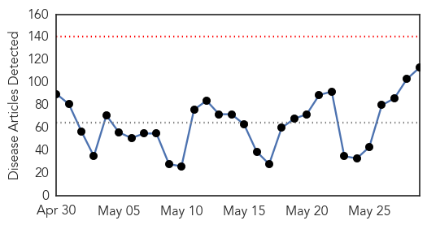
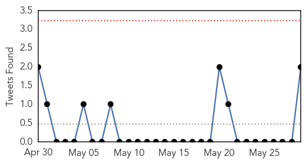
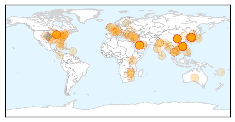
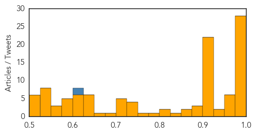
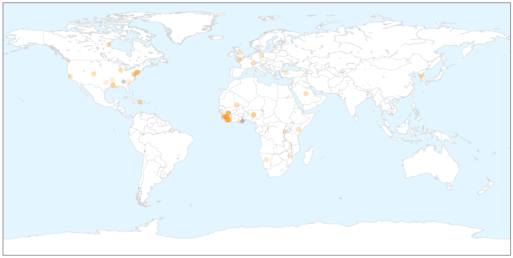

Unknown
30-Day Web Trend
0 alerts, 0 warnings

30-Day Twitter Trend
0 alerts, 0 warnings

Article Locations

Article Confidences
Top Articles:
- 0.998
- S. Korean man who flew to China despite being under quarantine tests positive for MERS
- 0.998
- South Korea’s Tally of MERS Cases Rises to 12
- 0.998
- (8th LD) S. Korea traveler in China diagnosed with MERS
- 0.998
- (7th LD) S. Korea traveler in China diagnosed with MERS
- 0.997
- South Korea reports two additional Mers cases; none in critical condition, East Asia News & Top Stories
- 0.997
- S. Korea confirms 12 MERS cases
- 0.997
- (5th LD) S. Korea traveler in China diagnosed with MERS
- 0.996
- 1st suspected case of MERS reported in S. China
- 0.995
- MERS infects 10 in South Korea but no virus mutation - WHO
- 0.995
- MERS infects 10 in South Korea but no virus mutation: WHO
- 0.994
- MERS infects 10 in South Korea but no virus mutation
- 0.994
- S. Korea confirms 12 MERS cases
- 0.994
- MERS infects 10 in South Korea but no virus mutation: WHO
- 0.994
- S Korea confirms 12 MERS cases
- 0.994
- Beijing confirms first case of MERS; S. Korea reports 10
- 0.993
- S. Korea confirms 10 MERS cases
- 0.993
- China reports first MERS case in Guangdong - Xinhua
- 0.992
- (MERS virus) Two more South Koreans infected
- 0.992
- China reports 1st suspected case of MERS as possible carrier enters mainland [UPDATED]
- 0.991
- SK businessman is China’s first MERS case
- 0.990
- South Korean ministry draws flak over Mers
- 0.989
- MERS infects 10 in South Korea but no virus mutation
- 0.981
- (MERS virus) Three held in quarantine
- 0.981
- HK on alert after suspected MERS patient passes through city
- 0.981
- Second case of rare Bourbon virus found in US
- 0.981
- Number of MERS-infected S. Koreans rise to 9 days after first case - Xinhua
- 0.977
- (MERS virus) South Korea reports three more infections
- 0.977
- MERS-infected S.Koreans rise to 7, 1 suspect leaves for China
- 0.975
- Oklahoma resident second confirmed case in US of rare tick-borne illness
- 0.970
- KBS World Radio
- 0.969
- Number of MERS-infected S ...｜Society｜WCT
- 0.964
- Suspected South Korean MERS patient leaves for China
- 0.960
- KBS World Radio
- 0.959
- MERS-infected S.Koreans rise to 9 in 9 days after first case - Xinhua
- 0.946
- What Is MERS?
- 0.931
- Chinese authorities on alert after S. Korean man confirmed with MERS
- 0.918
- China confirms first case of MERS, a South Korean man
- 0.917
- Chicago Tribune
- 0.917
- Chicago Tribune
- 0.917
- Chicago Tribune
- 0.917
- Chicago Tribune
- 0.917
- Chicago Tribune
- 0.917
- Chicago Tribune
- 0.917
- Chicago Tribune
- 0.917
- Chicago Tribune
- 0.917
- Chicago Tribune
- 0.917
- Chicago Tribune
- 0.917
- Chicago Tribune
- 0.917
- Chicago Tribune
- 0.917
- Chicago Tribune
Showing top 50 articles...
Top Tweets:
- 0.612
- 12 MERS cases in Korea now. Are 11 of these secondary cases that were contracted from one initial patient? That's getting to be a lot.
- 0.605
- RT: S. Korea confirms 12 MERS cases (Update): South Korea confirmed five MERS cases Friday bringing the total num... http://t…
Ebola
30-Day Web Trend
0 alerts, 2 warnings

30-Day Twitter Trend
0 alerts, 0 warnings

Article Locations

X

Article Confidences

Top Articles:
- 1.000
- Ebola diaries: From denial and fear to action
- 0.999
- MERS outbreak in South Korea infects 10
- 0.999
- New Jersey businessman who died of Lassa Fever contacted 150 amid NY fears
- 0.999
- 150 People in New Jersey May Have Been Exposed to Rare African Virus
- 0.999
- 150 People May Have Had Contact With Lassa Fever Victim
- 0.998
- Bill Clinton: ‘I’m officially Ebola-free’
- 0.998
- Ebola crisis isn’t over…
- 0.997
- Mānoa: Second partner backs UH effort to develop Ebola vaccine
- 0.996
- Red Cross sends Ebola team to at-risk GBissau border
- 0.996
- China confirms first S.Korean MERS case in Guangdong
- 0.994
- New Jersey Lassa Fever Death Reveals Holes In Ebola Monitoring System
- 0.989
- Rare viral disease kills US man back from Liberia
- 0.988
- Researchers help biomed company land FDA approval for Ebola detection
- 0.984
- United Nations World Food Programme - Fighting Hunger Worldwide
- 0.980
- Dangote Foundation Commits N906M to Ebola, Articles
- 0.966
- Ebola Present in Eyes Even After Blood Test Clears Patient
- 0.960
- Bill Clinton Says He's Ebola-Free After Annual Africa Trip, Raises Awareness For Issue
- 0.947
- Possible Ebola case in Kansas City
- 0.907
- Elkhart nurse to return after second trip to help stem Ebola outbreak in Liberia
- 0.904
- Samantha Power Travels to Guinea Amid Ebola Outbreak
- 0.903
- Lost on the Ebola money trail
- 0.852
- US military orders wide review as more cases come to light
- 0.849
- Bill Clinton will ‘keep working’ if Hillary wins
- 0.845
- RSF hails Security Council's historic decision on protecting journalists
- 0.841
- Ebola Q&A: Why Doesn't Aid Go To Nurses?
- 0.838
- Doctors Without Borders Is Pulling Out Of The World's Largest Refugee Camp
- 0.817
- Ebola Survivor Takes Fiancé to Treatment Centre
- 0.786
- Bill Gates: Global Pandemic Will Wipe Out 33 Million In 1 Year
- 0.764
- An anthropology of aid in Africa
- 0.733
- Offline: An irreversible change in global health governance
- 0.732
- The Ticking Timeline
- 0.729
- Leadership and health in Africa
- 0.729
- Several Oregon facilities among nation's secretive biolabs
- 0.722
- HUMAN RIGHTS COMMISSION CONCLUDES SYMPOSIUM ON DRAFT CONSTITUTIONAL POSITION
- 0.712
- Labs handling dangerous pathogens face increased scrutiny
- 0.686
- President Koroma hosts Tony Blair
- 0.670
- Red Cross ambulance driver and Ebola survivor vows to continue the fight in Guinea
- 0.656
- Juror Jailed for Negligence
- 0.623
- IMC – A DOG WITH POISON TEETH!
- 0.615
- Higher viral load at admission predicts greater mortality in EVD patients
- 0.556
- Blood from Amber Vinson used to create anti-Ebola drug
- 0.545
- Minister Ngafuan highlights Africa’s transformation
- 0.531
- Committee on Infectious Disease Control set up in Tarkwa
- 0.529
- 7 biggest healthcare stories this week
- 0.519
- Bilolabs in your backyard
- 0.504
- Clinton calls for better health care in Africa
Top Tweets:
- 0.965
- One Year of Ebola in Sierra Leone: 'We Could Be Ebola-Free by End July' - Ebola Deeply http://t.co/vnG5drIsES ebola EVD
- 0.827
- Elkhart nurse to return after second trip to help stem Ebola outbreak in Liberia - The Elkhart Truth http://t.co/W7XM8OIfGa ebola EVD
- 0.677
- Despite dropping case numbers the 3 most affected countries will each retain a core capacity of Ebola treatment centres. EbolaResponse
- 0.646
- New Jersey Lassa Fever Death Reveals Holes In Ebola Monitoring System - NPR http://t.co/lyeJm66bcD ebola EVD
- 0.592
- Jeff led CDC’s Infection Prevention and Control team while working in Sierra Leone on Ebola. Read his story: http://t.co/YuGLxd1kBT